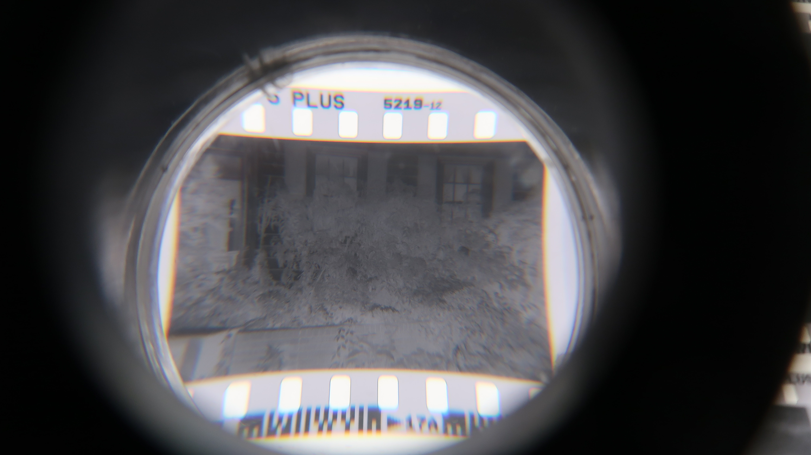
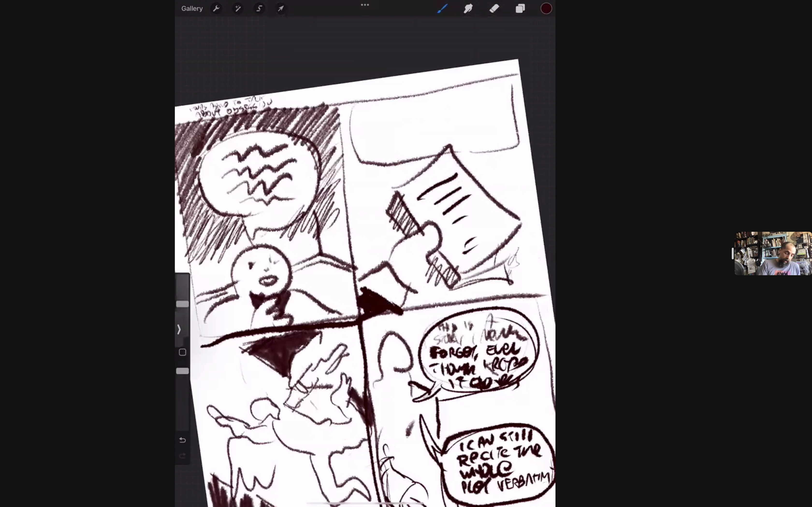

Experiments in Education II
August 19 2022

To continue the self-education motif, I signed up for a couple of classes over the summer.
Sometimes I wish I had gone to art school. I’m basically trying to shore up my lack of technical skill by taking a couple of art classes, but it isn’t the same as being solely dedicated to it for four years, having teachers and peers who can help and support. I don’t know how successful my plans will be, but at least I’ll have some fun experimenting.
The first class I signed up for was a Darkroom class at the Light Factory here in Charlotte. I've been shooting film for almost a year now, but I usually just drop it off at the lab and someone else develops it. I wanted to learn how the process actually works, because it seems so mystifying.
Our instructor, Mert, taught us how film was developed, how contact sheets were made and how enlargers worked. It was really cool to actually work in a darkroom. When we put our prints in the developer and images started appearing it was like magic!
I really liked this class, and I hope I get the chance to work in the darkroom more in the future.


The second class I took was a Cartooning class through the 92nd Street Y. I wanted to start making comics, but I didn’t feel like I could draw well enough to do that. I signed up for this class hoping I could get some help.
The comics I ended up making for class were mostly personal, but I really want to make more science fiction/fantasy comics in the future. I think the thing I struggle with the most is coming up with scripts and blocking characters in a panel. It's just so much easier to draw and write about real people and events as opposed to creating people and coming up with things for them to say. Josh, our comics instructor, would give us a prompt for a comic to make and we could interpret it anyway we wanted, but for some reason I could only figure out ways to relate it to my self.


Even though it was online I liked that we had time to draw during the class and it wasn't just Josh doing a demo for an hour and then giving us homework to do where we showed what we learned. Josh would show us some comics he thought were interesting and the techniques the artists were using that we could also use. Through the class we were exposed to a lot of different artists I had never heard of like Milton Caniff and Bernie Krigstein.
I made like three comics in the class which is more than I’ve made in my entire life, so all in all pretty great output. I’m a little embarrassed about them so I’ll only share a little bit. I hope I can keep making comics because I definitely need to improve my drawing skills. I just need to practice a lot, I think.

My least favorite class was the Riso class I took through SVA. I had seen a riso (rhymes with miso) printed zine, fell in love with the colors and decided I wanted to learn more.
Riso are prints using a risograph, which is basically a type of printer, sold by the Riso Kagaku corporation. Originally it was marketed towards schools and churches interested in making cheap copies. Somewhere along the way artists noticed the beautiful and vibrant colored inks and started using the printer to make art.
The reason I didn't enjoy my class is because we didn’t actually make anything. I should've realized that wouldn't work, I like making things, but I was eager to take the class. It's just something I'll have to remember for the future, I guess. We just learned how to prepare files for six weeks in the eventuality that we, or the local print shop, ever get access to a riso printer. Unfortunately there isn’t really a riso press here in Charlotte so I had to find one online.
I was able to find one that was taking clients, did a quick shitty design (which I really hate btw but, oh well) and managed to actually make some riso prints. It did seem a little intimidating at first so I'm happy that I kind of got the hang of it. I have a couple of designs in mind and I'm hoping one day I can even make my own riso zines!

Why can’t I just commit to one thing? Things would be a lot easier if I just said I wanted to focus on photography, or comics, or printmaking. My brain itches to try new things, and it’s been this way for a long time. I think I’ve gotten a lot better lately, but I used to just crawl MOOC sites and impulsively sign up to audit any course that looked interesting. Now I’m starting to be more measured with what courses I take on, despite wanting to learn about everything and anything.
I need to put all these skills to use somehow. Maybe I’ll do a project that encompasses all these different areas of knowledge. I’m proud of the work I did this semester, and the fact that I’m pushing myself to do this, I’m really looking forward to seeing what I learn in the fall!